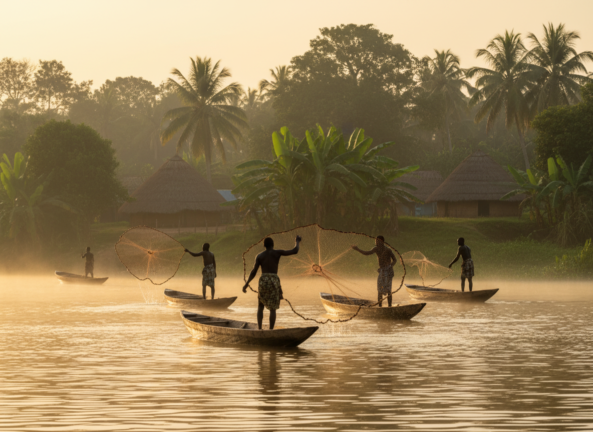

La Communauté Yasuku
The Yasuku Community
13 villages, une structure clanique ancestrale, et des valeurs communes transmises sur les rives de la Sanaga.
13 villages, an ancestral clan structure, and shared values passed down on the banks of the Sanaga.
Canton Yassoukou — Code 5.3.2.3.
Canton Yassoukou — Code 5.3.2.3.
Le Canton Yassoukou est situé dans l'arrondissement d'Edéa 1, département de la Sanaga-Maritime, Région du Littoral du Cameroun. Il est classé comme groupement traditionnel de deuxième degré en vertu de l'Arrêté n°18 du 19 janvier 1982.
Canton Yassoukou is located in the arrondissement of Edéa 1, Sanaga-Maritime department, Littoral Region of Cameroon. It is classified as a second-degree traditional grouping under Arrêté n°18 of January 19, 1982.
Les Yasuku partagent le territoire d'Edéa 1 avec les Adiè (les autochtones de la ville d'Edéa elle-même) et les Yawanda — leurs plus proches parents parmi les Elog Mpoo. La composition sociologique d'Edéa confirme explicitement : « les Bakoko (Adé et Yassoukou) sont des autochtones ».
The Yasuku share the Edéa 1 territory with the Adiè (the autochthones of the city of Edéa itself) and the Yawanda — their closest kin among the Elog Mpoo. Edéa's sociological composition explicitly states: "les Bakoko (Adé et Yassoukou) sont des autochtones" — confirming indigenous status.
| RégionRegion | Littoral |
| DépartementDepartment | Sanaga-Maritime |
| ArrondissementArrondissement | Edéa 1 |
| Code | 5.3.2.3. |
| PopulationPopulation | ~1 765 habitantsinhabitants |
| Chef SupérieurSuperior Chief | S.M. BAYEME Gabriel NDJEMBE |
| Secrétaire ACTEMACTEM Secretary | Sam Théophile EBOBISSE |
Les 13 Clans Elog Mpoo
The 13 Elog Mpoo Clans
Tous les Elog Mpoo descendent de Mpoo et de sa famille immédiate. Les 13 clans sont dispersés sur trois régions (Centre, Littoral, Sud) et six départements du Cameroun. La ligne Yasuku (surlignée) est l'une des plus directes depuis Mpoo.
All Elog Mpoo descend from Mpoo and his immediate family. The 13 clans are dispersed across three regions (Centre, Littoral, South) and six departments of Cameroon. The Yasuku line (highlighted) is one of the most direct from Mpoo.
| # | ClanClan | AncêtreAncestor | LangueLanguage | Localisation principalePrimary location |
|---|---|---|---|---|
| 1 | Yasuku (Yassoukou) ⭐ | Lisukè, fils de Linyima, fils de Mpoo | Bakoko (Yasug) | Arrondissement d'Edéa 1Edéa 1 arrondissement |
| 2 | Adiè | Adiè, fils de Likandè, fils de Mpoo | Bakoko | Edéa & nord de KribiEdéa & north Kribi |
| 3 | Yakalak | Mpam dit Kalake, fils de Mpoo | Bakoko (le plus purthe purest) | Dizangué & Mouanko |
| 4 | Yawanda | Ekoum, fils de Mpacke, fils de Mpoo | Bakoko | Edéa 1 |
| 5 | Ndonga | Mbambo, fils de Mpam, fils de Mpoo | Basaa-Ndonga | Dizangué |
| 6 | Yabii | Bii, fils de Likika, fils de Mpoo | Basaa | Edéa, Kribi, Messondo |
| 7 | Ndogbesol | Besol, fils de Bian, fils de Mpoo | Basaa | Edéa, Lolodorf, Messondo |
| 8 | Badjob | Njob Mbang Ngue (frère de Mpoobrother of Mpoo) | Basaa | Messondo, Bot Makak |
| 9 | Bisoo | Nsoo Mbang Ngue (frère de Mpoobrother of Mpoo) | Bakoko Bisoo | Ndom (gardiens de Ngog Litubaguardians of Ngog Lituba) |
| 10 | Yapeke | Peke (frère de Mpoobrother of Mpoo) | Bakoko Dibombari | Dibombari |
| 11 | Yabyan | Bwanè, fils de Mpoo | Bakoko Dibombari | Dibombari |
| 12 | Yapouma (Bakoko Wouri) | Pomane, fils de Mpam, fils de Mpoo | Bakoko | Douala III |
| 13 | Mban/Dibom | Oncle de MpooUncle of Mpoo | Bakoko secretBakoko (secret) | Nkondjock |
Les 13 Villages du Canton Yassoukou
The 13 Villages of Canton Yassoukou
Le Canton Yassoukou comprend treize villages, chacun avec son identité, ses anciens, et ses liens avec le fleuve. Ensemble, ils forment le cœur vivant du peuple Yasuku.
Canton Yassoukou comprises thirteen villages, each with its identity, its elders, and its connection to the river. Together they form the living heart of the Yasuku people.
Activités quotidiennes au bord du fleuve
Daily activities by the river

Ce que nous partageons What we share
Solidarité clanique
Clan solidarity
Le système segmentaire lignager des Elog Mpoo repose sur l'entraide entre clans. Yasuku et Yawanda sont décrits comme « les plus proches parents » d'Edéa.
The Elog Mpoo segmentary lineage system rests on mutual aid between clans. Yasuku and Yawanda are described as "closest kin" in Edéa.
Rapport à la terre
Relationship to the land
Autochtones reconnus d'Edéa, les Yasuku entretiennent un lien profond avec la forêt, la rivière et la terre — un lien documenté depuis les témoignages des ancêtres du XIXe siècle.
Recognized autochthones of Edéa, the Yasuku maintain a deep bond with forest, river, and land — a bond documented since 19th-century ancestral testimony.
Gouvernance coutumière
Customary governance
L'ACTEM (Assemblée Coutumière et Traditionnelle des Elog Mpoo) réunit les 13 clans depuis 1948. Les Yasuku y participent activement à travers leurs représentants.
ACTEM (Customary and Traditional Assembly of the Elog Mpoo) unites the 13 clans since 1948. The Yasuku actively participate through their representatives.
Transmission orale
Oral transmission
La mémoire vivante — généalogies, contes, chants, proverbes — est la bibliothèque du peuple Yasuku. Préserver les anciens, c'est préserver la bibliothèque.
Living memory — genealogies, stories, songs, proverbs — is the Yasuku people's library. Preserving elders means preserving the library.